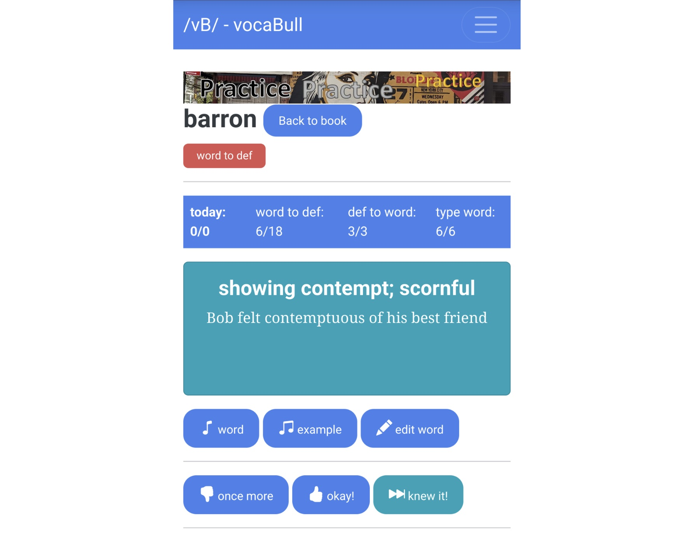
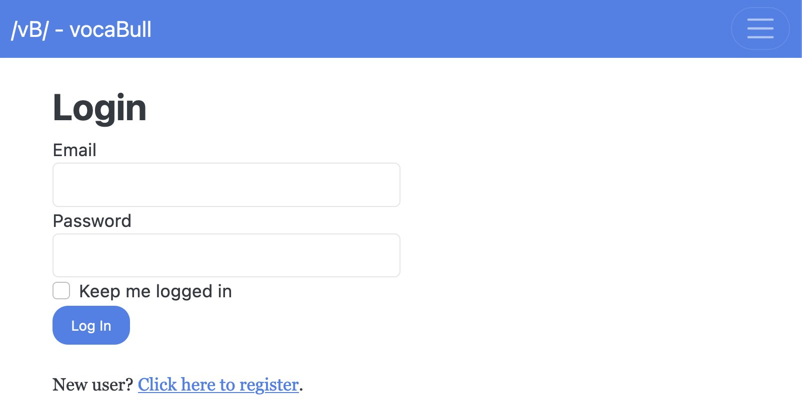
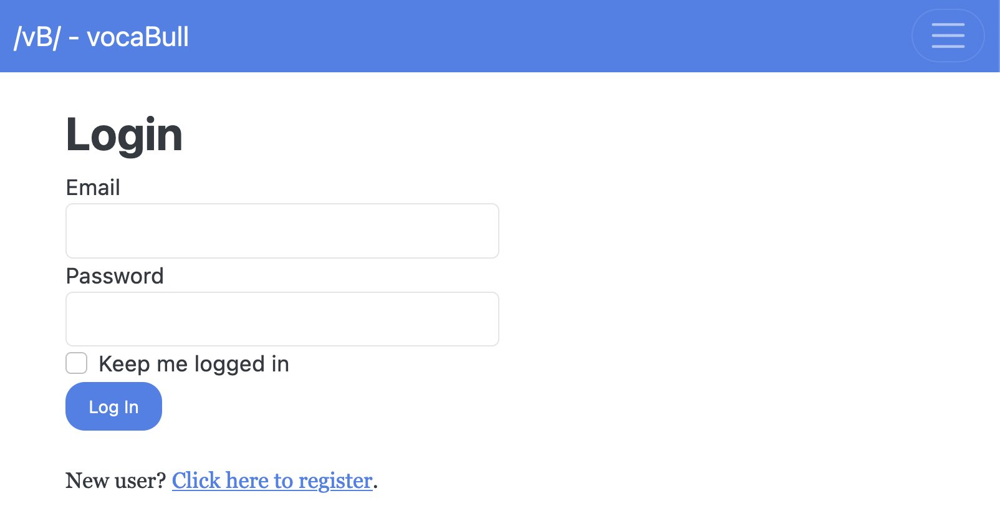
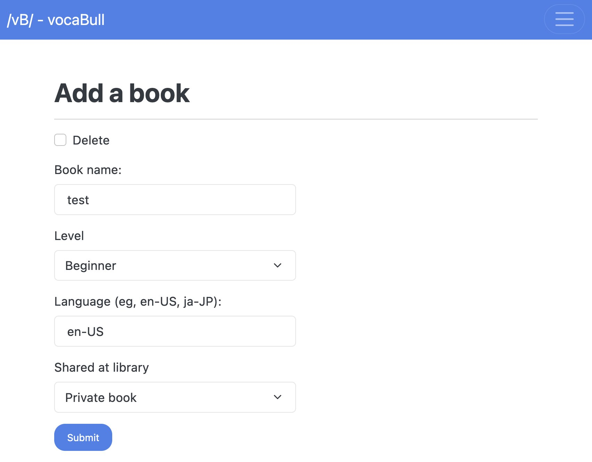
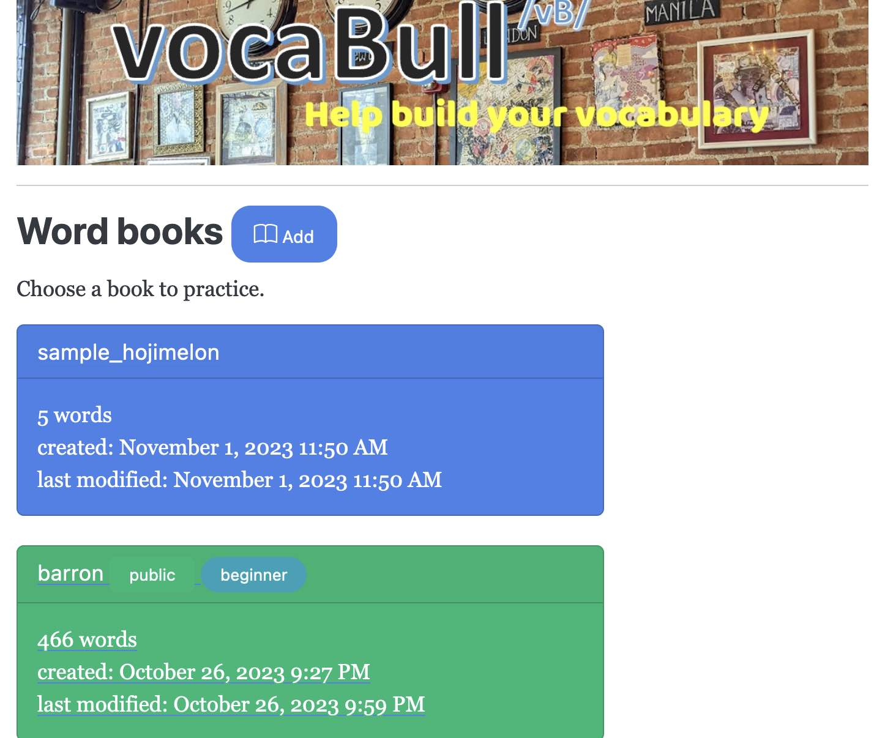

Table of Contents
- 1. Introduction
- 2. vocaBull
- 3. Usage
- 4. Resources
1. Introduction
I recently created a web application for vocabulary building called vocaBull, and deployed it on pythonanywhere.com. Of course, you can register and use it for free.
2. vocaBull
2.1. Overview

vocaBull is a web application for building your vocabulary skills. It has three practice modes:
- flashcard -
word to defmode - flashcard -
def to wordmode - practicing spells -
type wordmode
You can access vocaBull from you PC or mobile devices. On my Google Pixel 7 Pro, it looks like:

I believe it is better than simple flashcards because:
- You’ll see hard-to-memorize words more frequently
- The "Shifting Learning Window" feature (see below)
- You can practice anywhere at anytime with your mobile phone, tablet or PC
- You can practice spelling (type-word mode)
- Presents words in random order
- It reads aloud words for you with
(pronounce) wordorexamplebutton
2.2. The "Shifting Learning Window" feature
Repetition is the key for memorizing new words (thus, flash cards), but I don’t think exising flash cards or flash-card apps provide you with enough repetitions for efficient memorization.
For example, say, a set of flash cards or a word book has 200 words. If you go over the 200 words one-by-one, you’d be most likely to forget almost everything when you encountr the same word for the 2nd, 3rd or 4th time.
vocaBull addresses this issue by introducing a combination of high-frequency repetitions of small number of words, and low-frequency repetitions of medium number of words - the Shifting Learning Window feature.

The high-frequenry repetitions are realized with the “Learning Window”. Learning Window has 10 words, and initially these are the 1st 10 words in a word book. (More precicely, words are randomly picked)
As you repeat 10 words in the Learning Window, you memorize a word or two. Then, the Learning Window replaces the memorized word with a new word. This way, the Learning Window has 10 words that you are actively working on. It shifts through a word book and eventually reaches the end of the book. Then, the next cycle starts. This process contines until you memorize everything in the book.
As you can see,
- the Learning Winows represents the unit of high-frequency repetitions
- a word book represents that of low-frequency repepitions.
3. Usage
3.1. Register and login

- Click the menu icon at the top right corner >
Login>Click here to register
 

- Enter email, username and password to create an account
- Wait for several minutes for an email to come, and click a confirmation link in it
- Login with your email and password
3.2. Choose a sample book
- At first, a sample book (ie, sample_<your_user_name>) is registerd and it has 5 words in it

- Click it. And then, the sample book page opens

3.3. Practice flashcards
- Click
Practicemenu >word to defordef to word

- You will be navigated to the practice page.

- Click the word card to flip and show the answer
- Sky blue side shows the word, and turquoise side shows the definition
- An example is always shown on the back side
- You can flip cards as many as you like
- Click
(pronounce) wordandexampleto check the pronounciation- It's a browser capability and might not sound very natural
- If you don’t know, click
(thumbs down) once moreso that the word will reappear in the near future - If you managed to memorize it, click
(thumbs up) okay!to increase the score by 1- You won’t see the word for this round as vocaBull presents to you 10-lowest-score words
- If you know the word, click
knew it!to increase the score by 5!- So, you won’t see the word for 5 rounds
- Click
Back to bookto go back to the selected book
3.4. Practice spells by typing words (many times..)
- Click
Practicemenu > choosetype word - vocaBull shows the definition of a word and asks you to type the word

- Type your answer and click
Submit(or push return key) - It shows corret/incorrect and asks you to type the word 4 times, anyway
- Tip: use tab or return key to move from an input box to another
- If incorrect, you’ll see the word again after a while

- Click
(pronounce) wordandexampleto check the pronounciation
3.5. Create a book and add words
Also, you can create your own book and register words.
- Click Word books >
(book) Addbutton

- Type a book name, select level, type language-code (en-US for US English) and click
Submit

- Click the newly created book card > click
Add word - Type word, definition and example, and then click
Submit→ Now,Practiceis activated- Add a few words

3.6. Or, borrow a wordbook from the library
You can borrow wordbooks that other users created and practice them as if these are your own books.
- Click menu icon on the top-right corner > choose
library> you are navigated to the library page

- You'll see books that other pepole published
- Click a book for browsing

- If you click
(Cart) Checkout, the book will appear on your home page but in a different color from your own books.

3.7. Alternatively, you can load words from a file
- Prepare a word definition file
- one word definition per line
- a line consists of
word,definitionand an optionalsample sentenceseparated by a tab (\t) - a line format (
\tis a tab):
<word>\t<definition>[\t<sample>]
- Example:
strident shrill, harsh, rough in more strident tones lassitude weariness, fatigue deleterious bad, harmful a deleterious effect on health
- Navigate to a book page
- Click
Load from file> clickBrowse...> choose a file > clickSubmit
3.8. Backup and restore
As vocaBull is still being developed, there's some risk that your data is all deleted and lost. For example, a bug could corrupt the database. To address such a scenario, I have implemented Export all and Import and restore features, which enable you to backup/restore your books and practice progress to a local file.

Export all exports all your books, all words in them and scores to a JSON file.
Import and restore reads the backup JSON file and restores books, words and scores. If there's an existing book of the same name, it will add words to the existing book. If the same word is in the book, it will overwrite the definition and sample sentence from the backup. For scores, larger values remain.
For example, if you Export all and then Import and restore right after, nothing will change in your books, words or scores.
3.8.1. How to backup
- On the top page, scroll down until you see Backup and restore section.
- Click
Export allto save your books and progress to a local file namedvocabull.json
3.8.2. How to restore
- On the top page, scroll down until you see Backup and restore section.
- click
Import and restorebutton - Click
Browse...and choosevocabull.json, and then clickSubmit
Now that vocaBull has backup/restore feature, I recommend you to backup your data frequently. As it's still under development, there's some risk that the vocaBull database is corrupt and lost.
4. Resources
- Deployed at: https://achiwa912.pythonanywhere.com/
- Project Link: https://github.com/achiwa912/vbs